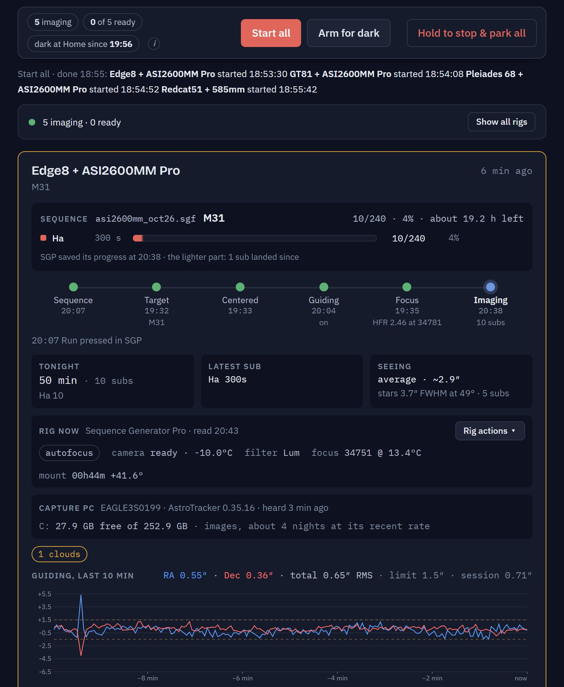

01Imaging
Every rig, live, on one page
Each rig's sequence, its progress per filter, guiding, focus and the latest sub, read from Sequence Generator Pro, N.I.N.A. and PHD2 as they work. With Sequence Generator Pro, start every rig when it gets dark, or the moment the sky clears, and stop and park them all from here.
- Arm for dark, or for the clear sky your all-sky camera sees
- Each rig's next meridian flip, counted down
- Guiding RMS, star size and seeing from every sub
- Each capture PC's drive space, and Windows Update kept from restarting it mid-sequence
- An alert the moment a sequence stalls or guiding drifts
